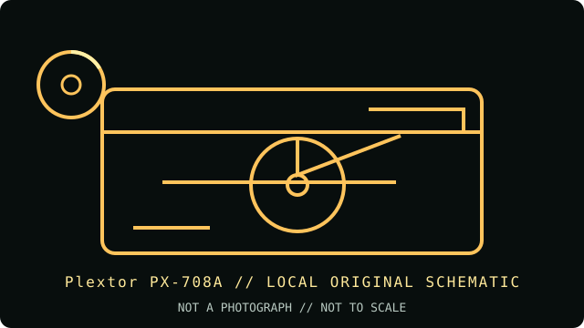

[ INDIVIDUAL COMPONENT // OPTICAL DRIVES ]
Plextor PX-708A
Plextor PX-708A is a first-generation dual-format DVD writer with asymmetric DVD+R and DVD-R speeds. It records single-layer DVD formats and CD media, not DVD-RAM or dual-layer DVD.

IDENTIFICATION: Plextor PX-708A · Internal 8× DVD+R / 4× DVD-R writer, early dual-format generation. Match the full model and revision marking to the cited archive before applying variant-specific specifications.
Model-specific specifications
| Catalog subcategory | DVD writers |
|---|---|
| Exact product identifier | Plextor PX-708A |
| Generation / product type | Internal 8× DVD+R / 4× DVD-R writer, early dual-format generation |
| DVD/CD media support | Writes DVD+R, DVD-R, DVD+RW, DVD-RW, CD-R and CD-RW; reads DVD-ROM, DVD±R/RW and common CD-ROM/audio/data formats. No DVD-RAM or DVD±R DL recording support is specified. |
| Maximum read/write speeds | Write: DVD+R up to 8×; DVD-R up to 4×; DVD+RW up to 4×; DVD-RW up to 2×; CD-R up to 40×; CD-RW up to 24×. Read: DVD-ROM up to 12×; CD-ROM up to 40×. |
| Interface and mechanics | Internal 5.25-inch E-IDE/ATAPI (PATA), with a 2 MB buffer. It is not the PX-708UF USB model or another PX-708 variant. |
| Host compatibility | Use a PC/Mac host with an E-IDE/ATAPI controller, correctly set drive jumper and compatible recording software. Historical software/OS support is version-specific; a current system requires a working PATA controller or compatible bridge. |
| Variant and use notes | Keep PX-708A distinct from Plextor PX-708UF and later 12×/16× models. Media certification, firmware and application support constrain achievable rates; test and verify the completed disc. |
Compatibility and preservation
Advertised maximum rates are media- and firmware-dependent; they are not a guarantee for aged, damaged or unsupported discs. For archival work, retain the full drive model, firmware, media identifier, write strategy and software version with the image or master.
- Confirm the complete label and PATA jumper position before installing; do not infer capabilities from a related suffix or OEM rebrand.
- Use supported blank media and a compatible recorder application, then verify the completed disc by readback and checksum.
- Handle optical media by its edge or hub, store it in a cool, dry location, and preserve an unmodified original when possible.
Manufacturer and archive sources
- Plextor PX-708A operating manual — ManualsLib archiveArchived manual with technical specifications and supported DVD/CD media.
- Plextor PX-708A manual — university archive PDFArchived manufacturer manual for setup, interface and host requirements.
These references document the named model/family; they do not certify a particular used drive, firmware revision or blank-media batch. Confirm exact suffix and region/OEM variant on the hardware label.